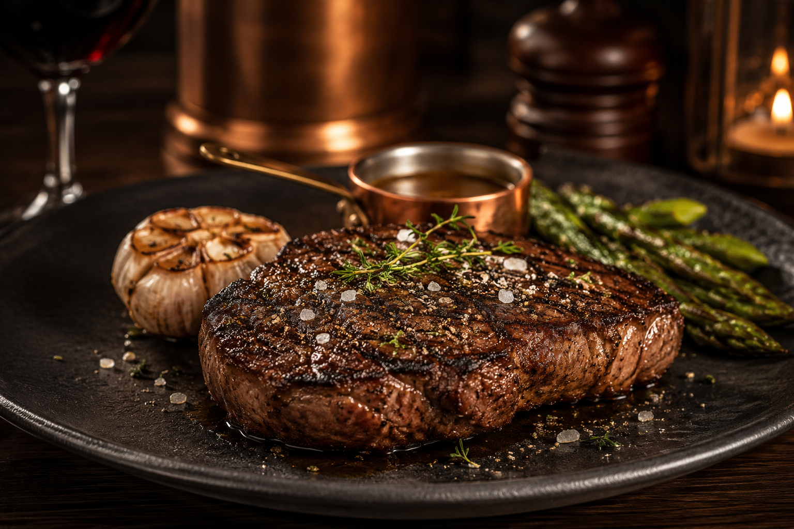

The Copper Crate
Our Menu
Our menu celebrates the craft of exceptional steakhouse dining. Prime cuts, seasonal ingredients, and open-fire cooking come together in dishes designed with precision, restraint, and timeless flavor.

From The Hearth
Fire & Iron
From The Kitchen
Signature Selections
On mobile devices, tap any menu item to view its description and notes.
| Combo | Includes | Price | Notes |
|---|---|---|---|
| The Copper Cut | 12 oz. Prime Ribeye, roasted garlic butter, seasonal vegetables | $58 | Popular |
| The Crate Filet | 8 oz. Center-Cut Filet, truffle potato purée, red wine jus | $62 | Chef's Favorite |
| Black Iron Strip | 14 oz. New York Strip, smoked shallot butter, asparagus | $64 | Signature |
| The Fire-Roasted Chicken | Herb-marinated chicken, roasted potatoes, seasonal greens | $36 | Open Fire |
| Copper Garden Salad | Charred seasonal vegetables, heirloom grains, herb vinaigrette | $28 | Vegan |
| The Crate Burger | Prime beef blend, aged cheddar, caramelized onions, house fries | $26 | Popular |
| Peppercorn Short Rib | Braised beef short rib, creamy polenta, peppercorn jus | $48 | Rich & Savory |
| Copper Crate Salmon | Fire-roasted Atlantic salmon, lemon beurre blanc, asparagus | $42 | Seasonal |